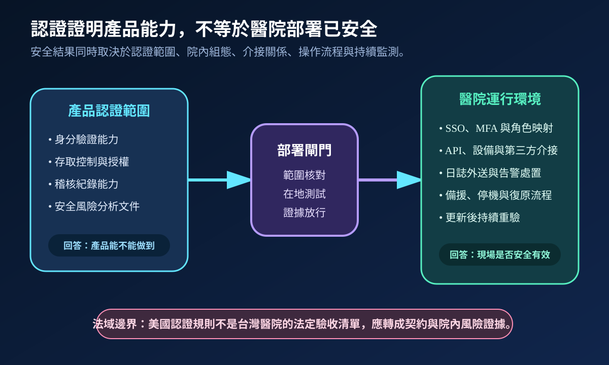
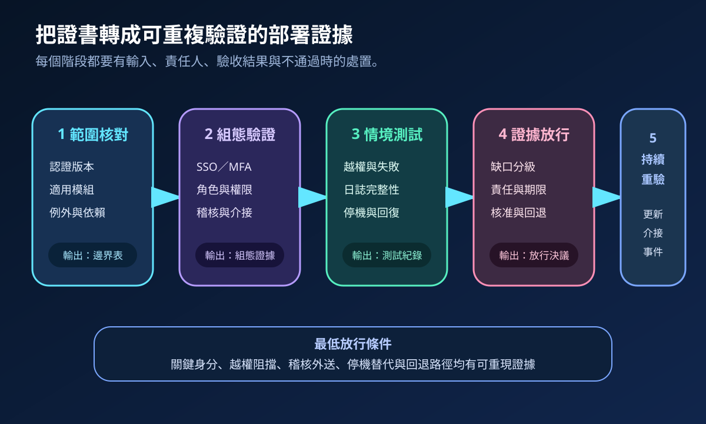
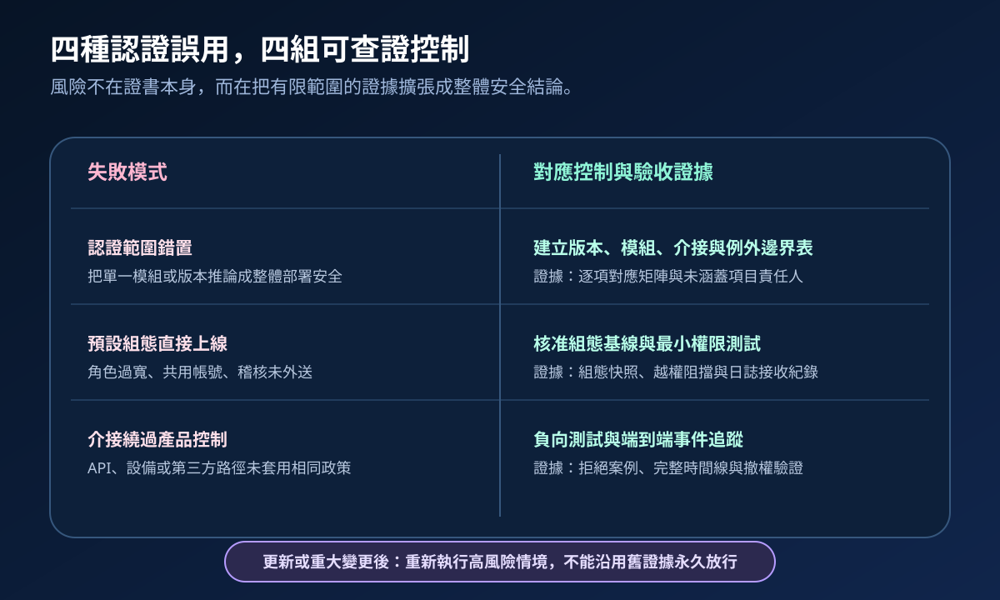

醫療資安國際觀察 · 2026-10-31
健康資訊系統取得認證後，醫院仍要驗什麼：從產品能力到在地安全證據
作者：Dr. William｜醫療資訊與資安治理實務工作者
產品認證可確認特定版本與模組具備定義內的安全能力，但醫院的實際安全結果仍取決於身分整合、角色設定、API 介接、日誌外送、停機流程與更新後重驗。
名詞解釋：認證、驗收與持續保證不同
認證依既定準則確認產品能力與測試結果；在地驗收確認產品進入特定醫院環境後，組態、介接與流程符合核准條件；安全保證則以持續監測、情境測試與變更後重驗，證明控制仍有效。三者可相互支持，但不能互相取代。
國際現況與適用邊界
美國衛生與公共服務部於 2026 年 10 月公布 HTI-5 最終規則，調整 ONC 健康資訊科技認證計畫並保留隱私與安全認證準則。ONC 現行測試方法另明確定義身分驗證、存取控制與授權能力。這些要求有明確的美國法規與認證適用範圍，不能直接推定為台灣醫院的法定義務，也不能證明院內特定版本、組態與介接已完成安全驗收。
台灣適用原則：國外認證可作為採購證據來源之一；院內仍須依台灣法令、主管機關要求、醫療服務風險、契約與實際架構，建立自己的放行條件。
規劃：先把能力聲明轉成驗收矩陣
範圍應列出產品版本、認證模組、未涵蓋功能、SSO／MFA、角色映射、緊急存取、API 與設備介接、稽核外送、備援及更新責任。資訊、資安、臨床、醫工、採購與供應商共同指定證據擁有人。驗收指標可包含關鍵角色測試覆蓋率、越權阻擋通過率、日誌接收完整率、停機替代成功率與重大變更重驗完成時間。
實作：五階段形成可重複證據
- 範圍核對：確認證書、版本、模組、例外與第三方依賴。
- 組態驗證：檢查身分來源、MFA、角色、服務帳號、稽核與安全基線。
- 情境測試：執行越權、失敗登入、撤權、日誌中斷、API 拒絕、停機與回復案例。
- 證據放行：將缺口分級，指定責任、期限、補償控制、核准者與回退條件。
- 持續重驗：在版本更新、新介接、重大組態變更或事件後重跑高風險案例。

風險：最常見問題是把有限證據過度延伸
認證可能只涵蓋特定版本或能力；實際部署可能因共用帳號、角色過寬、未外送日誌、介接繞過政策或更新後設定漂移而產生新風險。NIST 技術測試指引強調規劃、執行、發現分析與緩解策略；醫院可據此建立負向測試及重驗閉環。無法證明控制有效的項目應列為缺口，不宜以「產品已認證」結案。

可執行清單
- 證書是否對應實際上線版本、模組與部署型態？
- 未被認證涵蓋的介接、客製功能與外部依賴是否另有驗收？
- 關鍵角色、緊急存取、服務帳號與撤權是否完成正向及負向測試？
- 稽核紀錄是否送往獨立平台，並能重建完整事件時間線？
- 停機、備援與回復流程是否由臨床與技術共同演練？
- 版本更新與重大變更是否會自動觸發重驗及重新放行？
來源
- U.S. Federal Register｜HTI-5 Final Rule（文件：2026-19650；公布：2026-10-29；查閱：2026-10-31）
- ASTP/ONC｜Authentication, Access Control, and Authorization Test Method（現行測試方法；查閱：2026-10-31）
- CISA｜Secure by Demand Guide（發布：2024-08-06；查閱：2026-10-31）
- NIST｜SP 800-115 Technical Guide to Information Security Testing and Assessment（發布：2008-09；查閱：2026-10-31）
內容說明
本文依健康台灣深耕計畫相關治理內容整理，並參考美國 HTI-5 最終規則、ONC 認證測試方法與 NIST 安全測試指引，說明產品認證與醫院在地安全驗收的責任邊界；不把美國認證規則視為台灣法定義務，也不取代主管機關公告、院內風險評估、產品支援、醫療品質程序或法律意見。